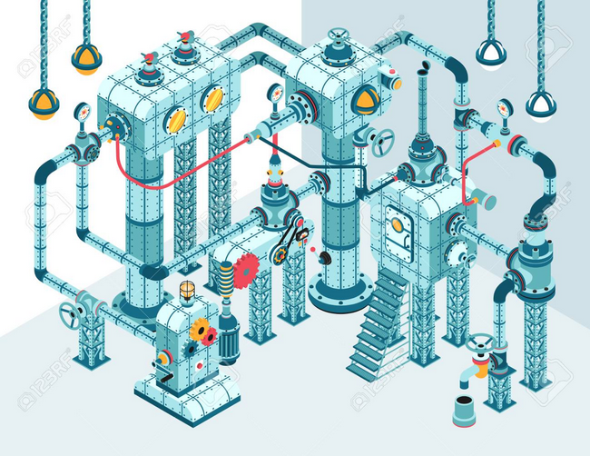

DevOps: A Bird's-eye View@ReadySetAgile |
A brief overview of today's DevOps culture |
 |
John Riley Principle Agile Coach and Trainer |
### About John
---

### Activity: What Brings you here?
---
Note:
POLL THE AUDIENCE
Anyone from LOPSA here???


### It's about
### responding
### to
### complexity!

### It's about software delivery!
### It was a thing in the 1990's!
Note:
- Diskless workstations!

### It's about continuous delivery!
### It's about Shared Goals
---
“DevOps isn't simply a piece of software, a job title, or giving pagers to your developers. It's a cultural and professional movement. It is everyone working together toward a shared goal - delighting customers. Anyone who tries to sell you something else is pushing you some manure.”
- Shared Goals not horse manure
chef.io/solutions/devops
chef.io/solutions/devops
### New Techniques Introduced
---
qa-server
---
- hosts: qa-server
sudo: yes
sudo_user: root
tasks:
- name: install mysql-server
apt: name=mysql-server state=present update_cache=yes
- name: install ansible dependencies
apt: name=python-mysqldb state=present
- name: Ensure mysql is running
service: name=mysql state=started
- name: Create user with the password and all previleges
mysql_user: login_user=root login_password="" name={{ mysql_user }} password={{ mysql_password }} priv=*.*:ALL host=% state=present
- name: Delete test database
mysql_db: name=test state=absent
- name: Create ansible_example database
mysql_db: name=ansible_example state=present
prod-server
---
- hosts: prod-server
sudo: yes
sudo_user: root
tasks:
- name: install mysql-server
apt: name=mysql-server state=present update_cache=no
- name: install ansible dependencies
apt: name=python-mysqldb state=present
- name: Ensure mysql is running
service: name=mysql state=started
- name: Create user with the password and all previleges
mysql_user: login_user=root login_password="" name={{ mysql_user }} password={{ mysql_password }} priv=*.*:ALL host=% state=present
- name: Copy mysql back up dump to the remote_user
copy: src=dump.sql.bz2 dest=/tmp
- name: Restore the dump into ansible_example database
mysql_db: name=ansible_example state=import target=/tmp/dump.sql.bz2
### Pain Points Addressed
---
Time to Release (stabilization)
Feedback From Users

Communication between teams

Product Maintainability

Time To Market
Overall Quality

### Adopting DevOps
---
Assess the need!
- Create a plan
- Create a process
- No one solution
Proof-of-concept
- Experiment with teams
- Try experts on each team
- Inspect and Adapt
- Iterate and Scale
Get some tools and training
- Continuous Delivery Pipeline
- Learn your *DDs
- Auto deploy solutions
- Infrastructure solutions
### Evolution of Technology
---
Batch processing (Command line)


Remote desktop


Version Control and Deployment


#### Application Lifecycle Management


Virtual Environments


Package Management / Deployment


Cloud Computing Service models
*aaA (as a service)
*aaA (as a service)


Complete Infrastructure Solutions


Containers


Note:
- Containers are a popular way to deploy microservices
### Thank you!
---

john@ReadySetAgile.com - John Riley
 @ReadySetAgile
@ReadySetAgile @ReadySetAgile
@ReadySetAgile https://www.facebook.com/ReadySetAgile/
https://www.facebook.com/ReadySetAgile/ https://www.linkedin.com/company/ready-set-agile/
https://www.linkedin.com/company/ready-set-agile/